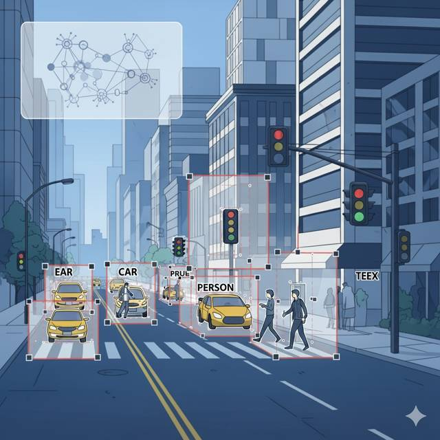

객체 탐지 (Object Detection)

비교
시스템
알고리즘 및 모델
2015년
2016년
2017년
- DSSD (Deconvolutional Single Shot Detectorm 2017-01-23)
- FSSD (Feature Fusion Single Shot Detector, 2017-12-04)
- Cascade R-CNN (2017) 고품질 객체 탐지를 위한 다단계 아키텍처
- Mask R-CNN (2017)
- RetinaNet 조밀한 객체 탐지 (2017)
2019년
- FCOS (Fully Convolutional One-Stage Object Detection, 2019)
- CenterNet (2019) 객체 탐지의 새로운 지평을 연 Anchor-Free 패러다임
2020년
- DETR (DEtection TRansformer, 2020-05)
- Deformable DETR (2020-10-08)
- Sparse R-CNN (2020-11-25) 학습 가능한 프로포절을 통한 End-to-End 객체 탐지
2021년
2022년
- DINO (2022-03) 대조적 노이즈 제거를 통한 End-to-End 객체 탐지
- Co-DETR (2022-11-19) 협력적 하이브리드 할당을 통한 DETR 기반 객체 탐지기의 훈련 최적화
- RTMDet (Real-Time Models for Object Detection, 2022-12-14)
2023년
2024년
- MM-Grounding-DINO (2024-01) 통합 객체 그라운딩 및 탐지를 위한 개방형 파이프라인
- RT-DETRv2 (2024-07-24) 실시간 객체 탐지를 위한 Bag-of-Freebies 기반 Transformer